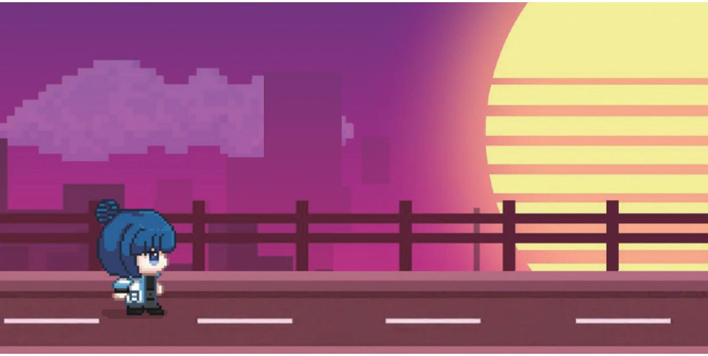
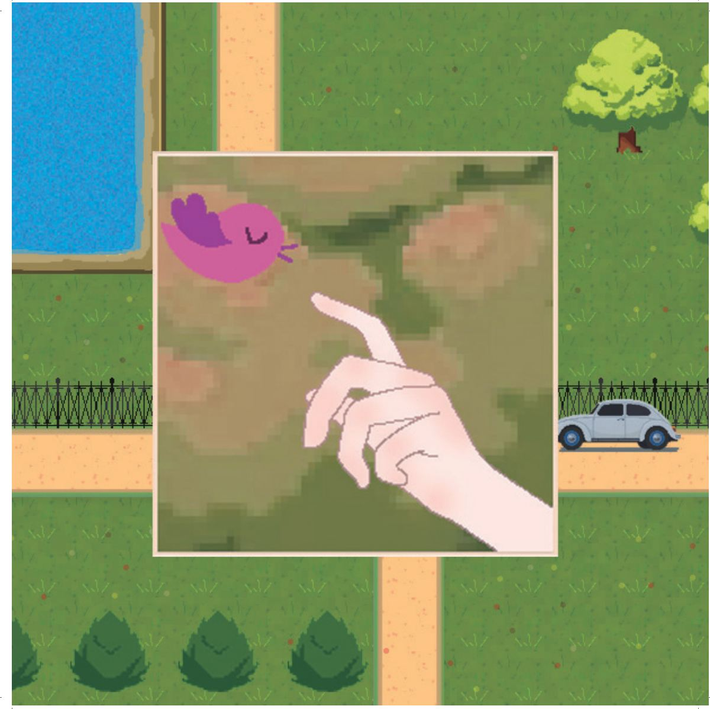
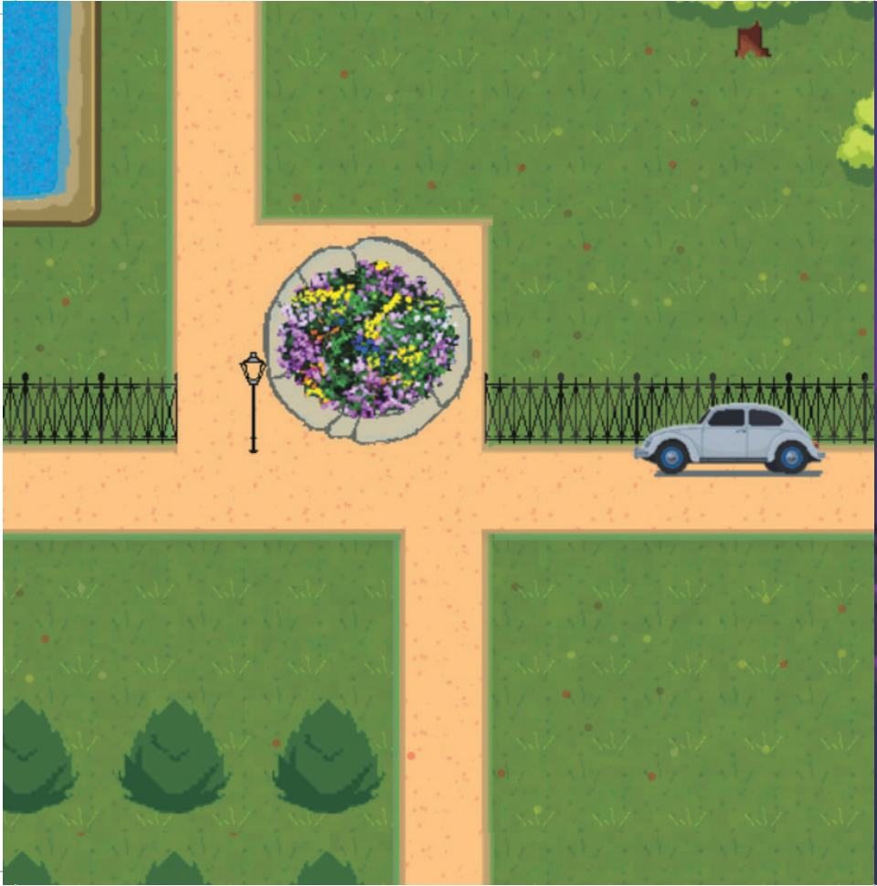
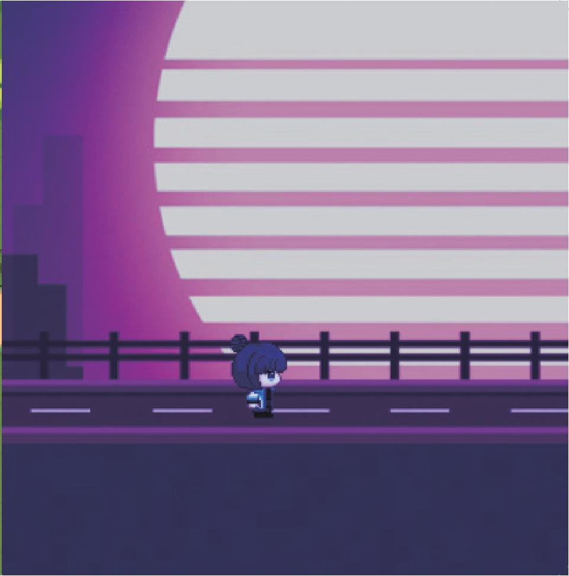
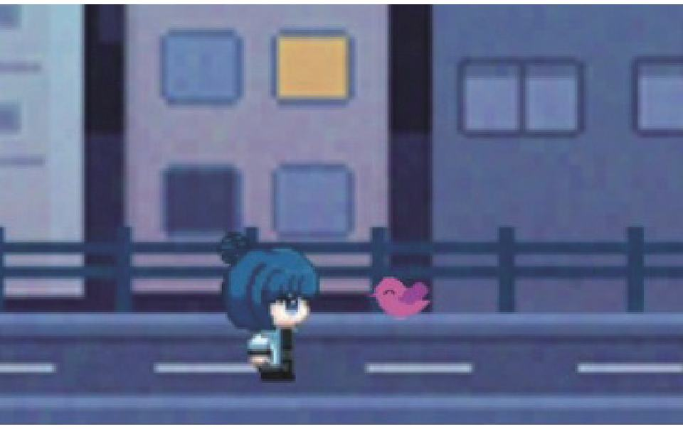
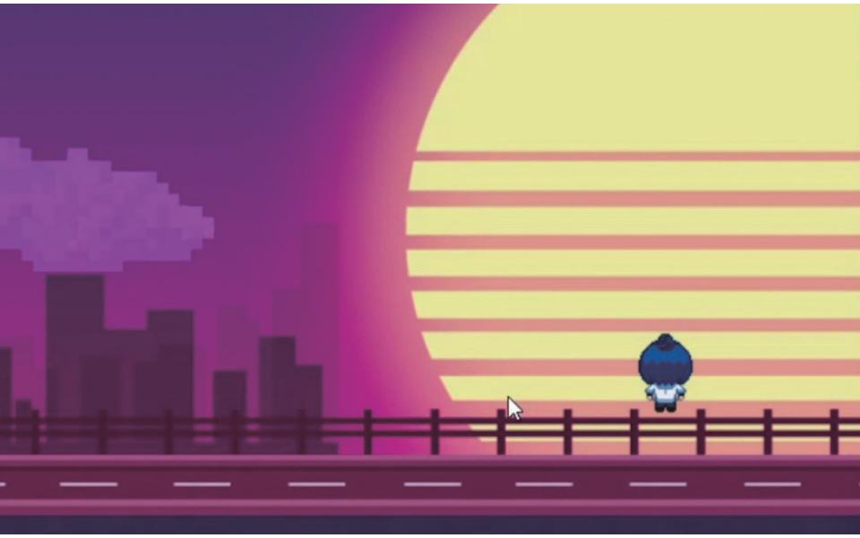
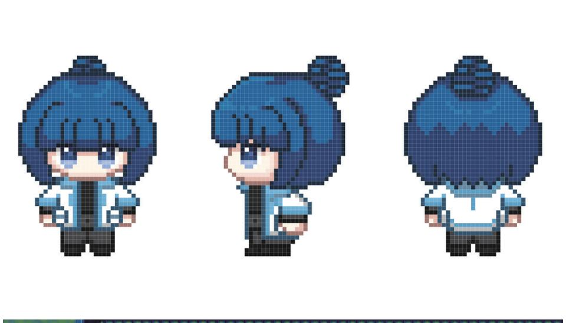

주인공이 혼수상태에 빠졌을 때 꿈속에서 기억을 되찾고 현실을 직시하는 이야기.
A story where the protagonist, while in a coma, regains memories in a dream and confronts reality.
- 학생
- 우가흔 (YU JIAXIN)
- 분야
- 게임
- 형식
- 2D 게임
- 엔진·도구
- RPG Maker
- 장르
- Fantasy
- 화면비
- 16:9
- 전시
- 2025 졸업작품전 「New Game+」
시놉시스
소녀가 혼수상태에 빠진 사이 의식은 꿈속에 갇혔다. 꿈속에서 익숙한 장면은 점차 낯설고 혼란스러워지며, 현실의 기억과 환상이 얽힌다.꿈속에서 끊임없이 탐구하고 흩어진 기억의 파편을 추적하여 잃어버린 과거를 되찾으려 한다.기억이 점차 완전해짐에 따라 그녀는 마침내 진실을 마주하게 되었고, 혼란스러운 꿈에서 깨어나 새로운 시작을 맞이하게 되었다.
While the girl lay in a coma, her consciousness became trapped within a dream. Within that dream, familiar scenes gradually grew strange and chaotic, tangling memories of reality with illusions.She relentlessly explored within the dream, chasing scattered fragments of memory to reclaim her lost [past.As](http://past.as/) her memories gradually became complete, she finally confronted the truth, awoke from the chaotic dream, and embraced a new beginning.
기획 의도
가벼운 파쿠르 모험을 통해 삶에 대한 긍정적인 마인드를 보여주고자 한다. 픽셀 스타일과 현실 장면의 얽힘은 상상력이 삶에 부여한 무한한 가능성을 상징한다. 이를 통해 생활에 어려움이 있더라도 용기와 낙관적인 태도로 뛰어넘고, 그 속에서 자신만의 즐거움을 찾을 수 있음을 표현하고 싶다.
Through lighthearted parkour adventures, we aim to showcase a positive mindset toward life. The interweaving of pixel art and real-world scenes symbolizes the infinite possibilities imagination bestows upon life. We wish to express that even when facing difficulties in daily life, one can overcome them with courage and an optimistic attitude, finding their own joy within those challenges.
스틸





